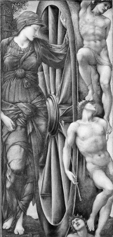

Seçenekler ve sorumluluk
Özgür irade sorunu kolayca hissedilir. Belki dünya belirlenimci bir sistemdir. Böyle bir dünyada dünyanın herhangi bir zamandaki durumu önceki zamandaki durumu tarafından kontrol edilir. Burada “kontrol” doğa yasaları ve önceki durum verili olduğunda, sonraki durumun bundan zorunlu olarak çıkacağı anlamına gelir.
Bu kafanız suya bastırıldığında boğulacağınız ya da pencereden atladığınızda yere düşeceğiniz kadar değiştirilemez bir olgudur. Öyleyse bizler olayların çaresiz mahkûmlarıyız; aslında doğumumuzdan çok öncesine, zamanın başlangıcına kadar uzanan olayların esirleriyiz.
Bir İkilem
Başka bir seçenek daha var. Bu seçenek sistem içinde rastlantısal öğelere, ani ve öngörülemeyen olaylara önemli bir yer ayırır. Bu rastlantısallığın makro düzeydeki olaylar için geçerli olup olmadığı aşikâr olmayabilir, ama kuantum teorisi atom altı düzeyde rastlantısal olaylar olduğunu kabul eder. Kimileri de bu teoriye dayanarak bu seçeneği savunur. Bir an için bu rastlantısallıkla kutsandığımızı ya da lanetlendiğimizi varsayalım. Belki beynimizin içinde kuantum düzeyinde rastlantısal olaylar oluyor. Ardından bunu rastlantısal hareketler, düşünceler veya seçimler izliyor. Bu resimdeki sorun bunun hiç de bizim istediğimiz şey olmamasıdır. Sonuçlarının olayları harekete geçirdiği yerleşik bir rulet çarkına sahip olarak sorumluluk sahibi olamayız. Eğer çark belirlenimci olmayan bir sistemse, onun yaptığı işten biz sorumlu olamayız – hiç kimse olamaz.
İkilem şudur: Ya doğa belirlenimcidir, o zaman özgür iradeye yer yoktur, ya da doğa bazı rastlantısal ögeler içerir, o zaman yine özgür iradeye yer yoktur.

KADER ÇARKI (1871-1885)
Sir Edward Burne-Jones (1833-1898)
Bir Çıkmaz Sokak
Bu ikilemle karşılaştığımızda bizi bu sorundan kurtaracak bir “benlik” anlayışı bulmaya çalışırız. Bu fiziksel doğayı meydana getiren nedensel olarak birbirine bağlı olaylardan tamamen bağımsız bir şekilde kararlar veren ve seçimler yapan etkin bir kişi, bir özne imgesi olabilir. Bu anlayışta, özne sanki doğanın dışında, kimya veya fiziğin erişiminin ötesinde bir boşlukta durur. Daha sonra da bu özne hiçbir şeyin kirletemediği saf bakış açısından olayların şu veya bu şekilde meydana gelmesini sağlayacak müdahaleleri yapmaya karar verir. Kimilerine göre sıradan “benlik farkındalığımız” bir tür “dizginsiz” özgürlüğü, olağan neden ve etki yürüyüşündeki bir tür molayı açığa vurur. Onların söylediklerine bakılırsa bu, kişinin kendini “özgür bir fail gibi” hissetmesidir. Bu resimde bizler genellikle ne istersek yapabileceğimiz özgür bir mekânın varlığının bilincindeyizdir. Ben buna “müdahaleci özgürlük anlayışı” diyorum. Bu anlayışa göre, özgür özne dünyanın süregiden akışına müdahale eder, ama bu akış içindeki olaylar onun şu veya bu şekilde davranmasına müdahale edemez, neden olamaz.
<>
Kimilerine göre bir makinede
hayalet olduğumuz görüşü
özgür bir seçim yaptığımızda hissettiğimizi hakkıyla
anlatabildiği için önemlidir. Gerçekten öyle mi?
<>
Bu özgürlük anlayışında birçok yanlışlık vardır. Eğer özgürlük için gerek duyduğumuz şey buysa, oyunu kaybettik demektir. Öncelikle o doğa hakkında bildiğimizi düşündüğümüz şeylerle bağdaşmaz. Fiziksel doğa nedensel olarak kapalı bir sistemdir. Doğa şeyleri meydana getirmek için fiziksel bir olaya ve fiziksel bir kuvvete gerek duyar. Bu şeylerin içinde konuşma ve eylem için gerekli olan beyindeki kimyasal ve elektriksel değişimler de vardır. Ayrıca fiziksel olaylar doğanın süregiden akışının dışında serbestçe yüzmezler – tam tersine doğa bu olaylardan oluşur.
Bu itirazı savuşturmak için “ruh”un ya da “benlik”in bir şekilde bizi oluşturuyor gibi görünen beyin ve beden sisteminde oturduğunu iddia eden ikici anlayışı benimsediğimizi kabul edelim: Fiziksel cisimleşmemizi oluşturan makinede bir hayalet bulunur. Bu durumda sorun elektriksel faaliyetler biçimindeki bilişler, beyin uyarımları, depolanmış anılarla bilişsel donanımımızın geri kalanı dahil fiziksel dünyamızın içerideki bu hayaletle nasıl etkileşime girdiğidir. İki yönlü bir etkileşim olmalıdır. Seçimleri yapan faili etkileyen olaylar olmalıdır. Seçimleri bir bilgi boşluğunda değil, ama içinde eylemde bulunduğumuz çevre hakkındaki bilgilerin ışığında yaparız. Belki bu bilgi geldiğinde, ayrıca “icrai seçim” yapılıyor. Herhalde özgürlüğün hüküm alanı da burasıdır. Ama hayalet sadece hayalet olaylar meydana getirmemelidir; kollarını sıvamalı ve fiziksel dünyada gerçek şeyler oluşturmalıdır. Bu resme göre, doğa enerjilerini hayalete sunar, hayalet de kimyasal ve fiziksel beyni yöneterek onun eylem akışını değiştirir. Buna inanmamıza imkân yoktur, zira bu anlayış sadece özgür irade sorununu erteler: Hayalet seçimlerini nasıl yapar? Hayalet kendisine ait bir doğası olan belirlenimci bir sistem midir? Yoksa rastlantısal olaylar meydana getirmeye mi eğilimlidir? Her iki durumda da bizim başımıza bela olan ikilem hayaletin de başının belasıdır: Sistem belirlenimci midir yoksa rastlantısal mıdır? Daha önce söylediğimiz gibi her iki durumda da özgür irade yoktur. İçsel bir hayaletin eklenmesi bizi bu ikilemden kurtarmaz.
Neyin Farkındayız ve
Nasıl Eylemde Bulunuruz?
Söylediğim gibi kimilerine göre makinedeki hayaletler olduğumuz görüşünü destekleyen şey, özgür bir seçim yaparken hissettiğimiz şeyin tam da böyle bir şey olmasıdır. Ama gerçekten öyle mi? Seçim yaparken zihinsel hallerimizi destekleyen çoklu süreçlerin bilincinde olmadığımız kesinlikle doğrudur. Mesela beyinlerimizin içinde ya da kaslarımızda olup biten birçok şeyin farkında olmuyoruz. Bir şeye gülümserken neye gülümsüyorsak ona dikkat ediyoruz. Gülmemizin meydana gelmesi için gerekli olan birçok nörolojik süreç ve kas süreci hakkında tamamen bilinçsiziz. Ama bunun anlamı tam da bu süreçlerin bilincinde olmadığımızdır, yoksa bu tür hiçbir sürecin olmadığının bilincinde olduğumuz değil. Bu tür süreçler olmasaydı, ne gülebilirdik ne de gülmeye karar verebilirdik. Bu da “özgürlük bilinci” diye bir şeyin olmadığı anlamına gelir. Bütün bilincinde olduğumuz, üstünde eylemde bulunmaya karar verdiğimiz dünya ve işler yolunda giderse, kendi eylemde bulunuşumuzdur.
Eğer karar-verme sürecine dair farkındalığımız müdahaleci özgürlük anlayışını desteklemiyorsa, o zaman onu daha gerçekçi bir modelle değiştirebiliriz. Dünyanın durumu hakkında bildiklerimizle uyumlu olan bir modele ihtiyacımız var. Çözüm insanları, beni ve sizleri, doğanın yabancı işgalcileri olarak değil, onun bir parçası olarak görmekten geçer: Gerçekten karmaşık, ama birçok başka parçayla aynı yasalara ve süreçlere tabi olan bir parça. Bilgiyi alan (duyular), işleyen (bilişsel sistemlerimiz), depolanmış anılarla bütünleştiren, ona arzu veya kaçınma biçiminde duygusal yükler bağlayan, uyarıları seçimi ve eylemi başlatan motor kortekse ulaştıran sistemlere sahibiz. İşler yolunda gittiğinde onların yaptıklarını denetlemekten sorumlu kişi bu sistemlerin bütünüdür; onların seçimleri ihtiyatsız, savsaklayıcı, ya da başka bir şekilde kusurluysa bunlardan sorumlu olan yine bu bütündür.
Öyleyse, özgürlüğümüz nedenlere duyarlı olmamızı içerir. Nedenler içinde bulunduğumuz durum hakkındaki olgulardır; bu olgular uygun tepkileri gerektirir. Bizler bir termostatın ortam sıcaklığına duyarlı olmasına benzer şekilde nedenlere duyarlıyız. Ama bizler, termostatın aksine, çok boyutluyuz. İçinde eylemde bulunduğumuz durumlar –ısı gibi– tek değişkenle değil, çoklu değişkenlerle belirlenir. Bizler karmaşık durumların karmaşık resimlerini bir araya getiririz; bu durumların içindeki faktörlerin bir kısmı bizi bir yana diğer bir kısmı başka yana çekebilir. Yargı ve pratik bilgelik sanatı doğru şeylere doğru şekilde dikkat etmeyi, sıklıkla tecrübe ve pratik sahibi olmayı ve belli oranda da şansı gerektirir.
İyi de bütün bu karar-veren faile dair betimlemelerde özgür iradenin yeri ne? Bütün bu dalga içinde esas konuyu gözden kaçırmadık mı? Diyelim ki Alfred art niyetli, özensiz, unutkan veya dogmatik karakterli, bu yüzden de verdiği kararlar gerçekten kötü; oysa Betty sevecen, özenli, kolayca erişebildiği bilgilerle donanmış, oldukça açık fikirli biri. Betty iyi şeyler yaparken Alfred her şeyi berbat ediyor. Ama bunun için neden Alfred’i suçlayalım? Böyle olmasından o sorumlu değildir – aslında baştaki ikilemimize göre, bu durumdan sorumlu olan olaylar çok gerilere, hatta derin jeolojik zamanlara kadar uzanan bir zincir oluşturur. Mizahçı ve felsefeci Michael Frayn bu “kayıp hissini” çok güzel ifade eder:
Bugüne kadar şu eski okulun merhametli ama mutlak hükümdarı, saltanatın işlerinin yürümesini sağlayan tüm fermanların kaynağı ve “kendi keyfimin kâhyası” olduğumu sanmıştım. Bu nedenle kendi otoriteme ilişkin bu araştırmayı memnuniyetle karşıladım. Ama şimdi hiç de mutlak bir hükümdar olmadığımı anlıyorum. Ben sadece anayasal bir kurguyum, posta pulunun üstündeki suretim, üzerlerinde hiçbir kontrolümün olmadığı tahtın arkasındaki bilinmeyen güçlerce yazılmış diplomaların altındaki imzayım… Hatta kişisel eğlencelerim bile yolunu hiç bilmediğim, içlerine hiç girmediğim saray odalarında çalışan görünmez görevliler tarafından düzenleniyor.
Suya bastırılmışsa Alfred’i boğulduğu için suçlayamayız. Öyleyse, sistemlerinin çalışmasını amansız bir kaderin belirlediği Alfred’i kötü kararları için neden suçlayalım? O, tıpkı unvan olarak saltanatın egemeni olsa da aslında bütün yaptıkları tahtın arkasındaki bilinmeyen güçler tarafından belirlenen iktidarsız monark gibi, sadece bir kurban ya da bir meful değil midir?
Bu soruların bizi alt etmesine meydan verirsek, ya tutarsız müdahaleci özgürlük anlayışına döneriz, ya da kavramın kendisi hakkında tamamen şüpheye düşeriz. Ya müdahaleci olacağız ya da şüpheci. Ama bu soruların sırtımızı yere getirmesine izin vermemeliyiz. Alfred’e yaptığı şeyleri yaptıran “tahtın arkasındaki güçler” değildir. Tahtı meydana getiren bu güçlerdir – başka bir deyişle, kişiyi olduğu kişi yapan bu sistemlerdir.
Sorumlu Termostat
Alfred’in yaptığı şeylerden sorumlu olduğuna dair anlayışımızı daha basit sistemleri düşünerek kurabiliriz. Termostat sıcaklığı istenen ölçüde sabit tutabilen bir tür kontrol sistemidir. Evimdeki termostat ortam sıcaklığından sorumludur. Termostat evimdeki sıcaklığı kontrol etmiyor. Onun kusurundan dolayı sıcaklıkta bir sorun varsa, onu tamir edebilirim ya da yenisiyle değiştirebilirim. Sıcaklığı kontrol etmeyen termostatı yapılma biçimine sığınarak savunamam. Bu hiç şüphesiz doğrudur, ama konu bu değildir. O sıcaklığı kontrol etmiştir, ama bunu kötü yapmıştır. Onu sıcaklıktan dolayı suçluyorum, yoksa yapılma biçiminden dolayı değil (bunun için başka bir makine suçlanabilir).
Termostatı onunla tartışarak iyileştiremem, ya da ceza tehdidiyle veya ödül vaadiyle daha iyi çalışmaya teşvik edemem. Bunun nedeni termostatın basit, tek boyutlu bir mekanizma olmasıdır. Ama insanlar tehditle veya ödülle güdülendirilebilir. Bizler sadece diğer kişilerden alınan açık girdilere değil, tahayyülümüzde provasını yaptığımız şeylere de duyarlıyız. Bir şey yaparken görülme fikrinin kendisi davranışımızı değiştirmek için yeterli olabilir (bkz. Neden İyi Olmalı? ve Tanrı’ya İhtiyacımız Var Mı?). Bu yüzden toplumsal dünyamız kısmen dürtmelerden ve düzeltmelerden, kaş çatmalardan ve gülümsemelerden, takdirlerden ve tekdirlerden oluşur. Kötü bir davranışınızdan dolayı size kızdığımda toplumsal dünya içindeki rolümü oynuyorum. Benim kızgınlığımı anlamazsanız niçin başka türlü davranmanız gerektiğinize dair nedenlerimi sıralarım. Bu nedenler sizin aklınıza gelmediyse, ya da aklınıza geldiği halde sizi etkilemediyse bu sizdeki bir kusurdan dolayıdır. Bu durumda, tıpkı termostat gibi, nasıl olduğunu biliyorsak onarılmanız veya nasıl yapılacağını biliyorsak değiştirilmeniz gerekebilir. Benim kızgınlığım sizin yaptığınız şeye bir tepkidir, ama aynı zamanda da bir işleve sahiptir. Bir tür reddetme işaretidir; bu hatanızı tekrarlama eğilimindeyseniz sizi, ya da sizi taklit etme eğilimindeyseler başkalarını durdurabilir.
<>
İnsanlar tehditler ve ödüllerle harekete geçirilebilirler.
Bizler
yalnızca başka insanlardan gelen açık girdilere değil,
tahayyülümüzde prova ettiğimiz şeylere de duyarlıyız.
<>
Ne Zaman Karar Veririz?
Son yıllarda nörofizyolojik değerlendirmeler de özgür irade tartışmaları içindeki yerini aldı. Özellikle nörolog Benjamin Libet’in “eylem zamanı” ile ilgili keşfettiği olguların özgür iradenin üzerine gölge düşürdüğüne yönelik yorumlar yapıldı. Libet’in deneyinde deneklerden parmaklarını oynatmak veya düğmeye basmak gibi basit bir motor hareket yapması istenir. Bu hareketi ne zaman yapacakları kendilerine bırakılır. Ancak deneklerden hareket etmeye karar verdikleri anı araştırmacıya bildirmeleri istenir. Libet deney sırasında beynin hareketin başlangıcını oluşturan motor korteksteki elektriksel faaliyeti ölçmüştür. Bu ölçümler beyinde “hazır olma potansiyeli” denilen ve uyarıların niceliğiyle orantılı olarak yavaşça artan nörolojik faaliyetlerin, deneklerin harekete karar verdiklerini bildirmesinden önce başladığını göstermiştir. Beyin öznenin bilinçli kararını bildirmesinden 35 salise önce hazırlıklara başlamaktadır. Birçok kişiye göre bu eylemlerimize kendi irade edimlerimizin değil, bilinçli kararlarımızı önceleyen bilinçsiz süreçlerin, tahtın arkasındaki güçlerin neden olduğunu göstermektedir.
Ancak Libet’in sonucunun bu yorumunu kabul etmek zorunda değiliz. Aslında bu yorum sadece el altından makinedeki hayalet modeline geri dönersek inandırıcı görünür. O zaman bizim kendi bildirimimiz hayaletin harekete geçmesinin güvenilir raporu olarak düşünülür. Bu durumda da hazır olma potansiyeli makinenin hayaletten önce harekete geçtiğini ve dolayısıyla da aslında hayaletin hiçbir şey meydana getirmediğini gösterir. Bu şekilde düşünmekten kurtulursak sonuçları farklı bir bakış açısıyla anlayabiliriz. Elimizde olan şudur: Öznenin kararını bildirdiği zaman, onu uygulamaya koyacak motor korteksin faaliyetinin zamanından biraz daha sonradır. Ama burada bu kararları, bu kararlara fiili olarak atıfta bulunduğumuz ya da onların bilincinde olduğumuz zaman aldığımızı söylememizi sağlayacak hiçbir neden yoktur.
Şu bilindik durumu düşünün. Soğuk bir günün sabahında yatağınızda yatıyorsunuz, kalkmanız gerektiğinin belli belirsiz farkındasınız. Kalkmayı deniyorsunuz, ama sırtüstü yataktasınız. Belki bir deneme daha yapıyorsunuz. Sonra bir kez daha… Ve kendinizi ayakta buluveriyorsunuz. Bu sizin sonunda kalkmaya karar verdiğiniz zamandı. Bu son seferde işbaşında olan motor süreçlerin hiç bilmediğiniz biçimde diğerlerinden farklı olması ve sizin kalkmaya karar verdiğinizi düşündüğünüz zamandan önce gelmeleri hiç şaşırtıcı değildir. Bu son denemede kalkmayı başardığınıza göre, daha önce başaramadığınızı bu kez başarmanızı sağlayan bir şeyler vardı. Ama bu kalkmaya sizin karar vermediğiniz anlamına gelmez. Kararı siz verdiniz ve bunun için takdir edilebilirsiniz, tıpkı yatmaya devam etmiş olsaydınız o sabah yapmanız gerekenleri yapmadığınız için suçlanabileceğiniz gibi. Diğerleri başarısız olduğu halde iradenin bu denemesini neyin başarılı kıldığı hakkında hiçbir şey bilmediğiniz için “kendimi birden ayakta buluverdim” hissine kapılabilirsiniz: Sanki eylem gizemli bir şekilde başka bir yerden gelivermiş gibi (tıpkı düşüncelerimizin gizemli bir şekilde başka bir yerden geliyormuş gibi hissedilmesine benzer şekilde). Frayn’ın analojisine dönersek, kalkmaya karar veren tüm saray halkıdır. Karar veren sistemlerinizin toplamı olan sizsiniz. Siz maiyetinden bağımsız hareket eden bir “hükümdar” değil, bir bütün olarak anayasal hükümetsiniz.
Aslında “Kalkmaya ne zaman karar verdiniz?” sorusu bir karışıklığı gizler, tıpkı “Yarışı ne zaman kazandınız?” sorusu gibi. Diğerlerinden önce ipi göğüslediğinizde yarışta başarılı oldunuz. Ama yarışa başladığınız zamandan itibaren hep yarışı kazanmak için uğraşıyordunuz. Bir yarışmacının başarısına şu sözlerle burun kıvıramazsanız: “Yarış kazanmak mı? Ondan kolay ne var. Yalnızca bir milisaniyelik iş.” Benzer şekilde kısa bir süre sonra kalkacağınızın farkında olarak sıcak yatağınızda tembelce yattığınız süre içinde hep kalkmaya karar vermekle meşguldünüz. Ve sonra – bingo! Ayaktasınız, belki şaşkınlık içindesiniz, tıpkı yarışın sonunda şaşkınlık içinde yarışı kazanmanız gibi.
Öyleyse özgür irade sorunu şu eski felsefi “her şey özgür iradeyle ne kastettiğinize bağlı” klişesine indirgenemez mi? Eğer nedensiz hayaletin hükümran bağımsızlığını istiyorsanız, ona sahip olamazsınız. Eğer uyum içinde çalışan ve nedenlere duyarlı olan büyük bir nörolojik ve anatomik sistemin anayasal hükümetine razıysanız, ona sahip olabilirsiniz. Sanırım bu anlaşmaya razı olmalısınız.
Üzgünüm, Sizin Hatanız
Nedenlere duyarlılık aslında birini överken ya da suçlarken, onu bir şeyden sorumlu tutarken ya da sorumluluk taşıyıp taşımadığını denetlerken başvurduğumuz bir özelliktir. Bir suçlunun zihinsel bir sorununun olması işlediği suçtan tam sorumlu olmadığını gösterir. Eskiden bir suçlunun zihinsel bir hastalığı olup olmadığını belirlemek için pratik bir yöntem kullanılırdı. Cevabı aranan soru şuydu: “Yanı başında bir polis olsaydı suçlu yine de bu suçu işler miydi?” “İşlemezdi” cevabı (a) muhtemelen kişinin yaptığı şeyin yanlış olduğunu bildiğini, ve (b) onun teşvik edici ve caydırıcı faktörlere –bu örnekte yakalanma olasılığının yüksekliğine– duyarlı olduğunu gösterirdi. Suçlu için azaltılmış sorumluluk talebi ancak polisin bile onu caydıramayacağı kuşkusu olduğunda kabul edilirdi.
Bana göre bu oldukça iyi bir kuraldır. Ama zihinsel yetersizlik durumlarından daha geniş alanlarda da kullanılabilir. Çok daha sıradan durumlarda da insanlar nedenlere olmaları gerekenden daha az duyarlı olabilir. Modanın ya da uylaşımların esiri olan insanlardan söz ediyoruz. Buradaki “esir imgesi” bir şeyin pençesinde olmak anlamına geliyor. Bir deneyimin ya da (yanlış) eğitimin sonucu olarak modaya ya da uylaşımlara uygun davranmamanın verdiği rahatsızlık insanların diğer olağan nedenleri bastırmasına sebep olabiliyor. Modanın esiri olan birisi belki polisin yanında giysi çalmayabilir, ama onu aşırı borçlanmayı göze alarak satın almaktan kendini alıkoyamaz. Bağımlılar nedenlere olmaları gerekenden daha az duyarlı olabiliyorlar. Bu yüzden bir bağımlıdan söz ederken “kendinde değildi,” “kendini kontrol edemiyor” diyoruz; onlara kızmanın doğru olmadığını, tedaviye ya da terapiye ihtiyaçları olduğunu düşündüğümüz bile oluyor.
Bu yaklaşım tikel durumlar için geçerli olabilir. Ama bunu genelleştirmek hiç de doğru değildir. Kendimizi ve başkalarını sorumlu kişiler olarak görmek nedenlere dayanan eylemleri sürdürmektir. Ne yapmamız gerektiğine karar verirken değişik seçeneklerin lehindeki ve aleyhindeki nedenleri zihnimizde tartma alışkanlığını bu şekilde sürdürüyoruz. Aslında her birimizin kendi yaşamlarımızla başkalarının yaşamlarının etkileşimi sırasında yapmak zorunda olduğu sayısız ayarlamaların bir parçası olarak içinde öfke, hayal kırıklığı, hatta aşağılama gibi tepkisel duyguların sabır, cesaretlendirme, takdir ve övgüyle yan yana durduğu toplumsal yaşamı bu şekilde sürdürüyoruz. Gerçek pratiklerimizde nedeni olmayan, hayaletimsi özgürlüğe yer yoktur. Bu tür pratiklerin gerektirdiği tek şey kendimizi ve başkalarını zombi olarak görmemektir, ya da eğer insanlık durumu hakkında iflah olmaz bir karamsarsanız, en azından bunu hak ettiğimizden daha sık yapmamaya çalışmaktır.